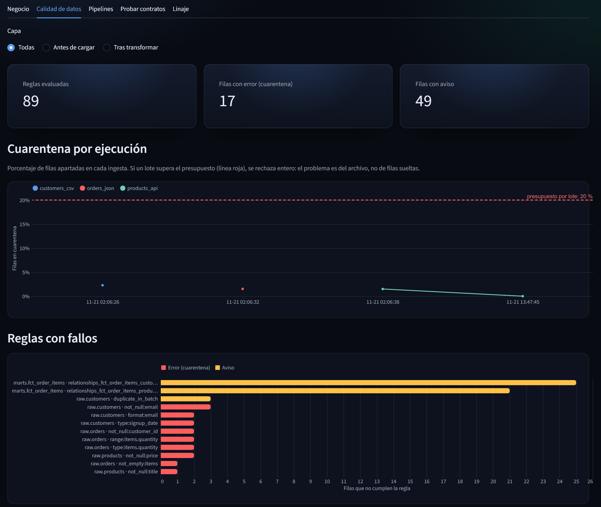

Sebastián Rodríguez · Medellín, CO
segment retail · alta 2024-11-13
dim_customerIngeniería de datos de punta a punta
CSV, JSON y una API REST paginada entran por contratos de validación, se cargan de forma idempotente, se modelan con dbt y salen como indicadores por una API de solo lectura. Todo se levanta con un comando y se verifica en CI en cada push.
Los registros salen de data/samples y sus defectos están anotados en
manifest.json. Este es su estado final; con JavaScript, el recorrido avanza y retrocede con el scroll.
Llegan seis registros de cinco archivos, todavía sin tipos: texto de CSV y JSON.
Los contratos de Polars revisan cada fila. Lo inválido no se pierde: se aparta con su motivo.
Lo válido se carga tal como llega y solo se añaden filas. Cada fila guarda la huella de su lote.
Un archivo reenviado con otro nombre pero el mismo contenido no crea un lote nuevo.
dbt tipa y normaliza. O000065 llegó dos veces: gana la versión más reciente y la vieja se queda en raw.
El modelo estrella: dimensiones con historial SCD2 y hechos por línea de pedido.
En las muestras completas hay 37 defectos anotados, y una prueba exige que el pipeline detecte exactamente esos.
Sebastián Rodríguez · Medellín, CO
segment retail · alta 2024-11-13
dim_customerNatalia Peña · Guadalajara, MX
email natalia.pena.9.at.example.com
Cuarentenacliente C00180 · producto 162
quantity 0
Cuarentenacliente C00102
status paid · 01-01 15:56
Versión 1cliente C00102
status cancelled · 01-03 19:53
Versión 2 fct_order_itemscustomers_2026-01-02_resend.csv
35 filas · sha256 2ff346bc…
Omitidoventas por día
⇄ fct_order_items
Concilia ✓Medido en el CI del 2026-11-10 (ubuntu-24.04, Python 3.13, PostgreSQL en contenedor).
Contratos por fuente, cuarentena con motivo y presupuesto de errores por lote. Las columnas nuevas de una fuente van a _extra.
Huella del contenido de cada lote y de cada registro, y marcas de agua con solapamiento. Repetir una carga no duplica nada.
Reintentos que respetan Retry-After, con espera exponencial aleatorizada. Carga atómica por lote y bloqueo por fuente.
Prefect 3: despliegues programados, reintentos solo ante fallos transitorios y disparo por API.
Modelo estrella con SCD2 que reconstruye cualquier fecha pasada y admite versiones tardías. El modo incremental da lo mismo que reconstruir todo.
Un rol por componente. La API solo lee marts y ops, y el panel no tiene credenciales de la base de datos.





Requisitos: Windows con Docker Desktop abierto y Git. Un comando crea .env con
secretos aleatorios, levanta el stack, ejecuta el flujo diario y deja el panel listo.
git clone https://github.com/JuanSGarciaC/datapulse.git cd datapulse .\scripts\demo.ps1 .env creado con secretos aleatorios (no se versiona). # … salida de docker compose up --build … Esperando a que el worker y Prefect estén listos... # … ingesta + dbt del flujo diario … DataPulse está listo: Dashboard http://localhost:8501 API (docs) http://localhost:8000/docs Authorize con la clave de lectura: ‹clave aleatoria› Prefect http://localhost:4200 Para apagarlo: docker compose down
Las líneas sin # son las que imprime scripts/demo.ps1
(la clave cambia en cada equipo); lo comentado resume la salida de Docker y del flujo.
Con la demo en marcha, estos enlaces abren tu panel y tu API.
Sube un CSV de clientes o un JSON de pedidos, o carga el ejemplo con filas reales defectuosas: verás qué filas irían a cuarentena y por qué. No se guarda nada.
Panel → Probar contratos
Abrir el panelLo que los contratos apartaron de verdad, con su motivo, el valor que falló, el archivo y el lote. El email llega enmascarado.
Panel → Calidad de datos
Abrir el panelO000065 llegó dos veces: la versión vigente, la superada, el sha256 de su lote, el archivo y la ejecución que lo cargó.
Panel → Linaje · API → /v1/lineage/orders/O000065
Para comprobar si la demo está en marcha, la página solo consulta
/health en tu propio equipo. No envía nada a ningún otro sitio.